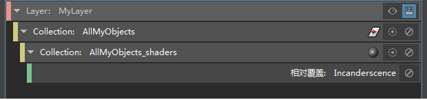
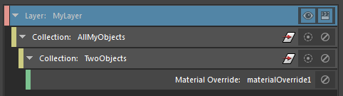
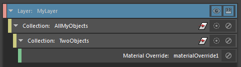
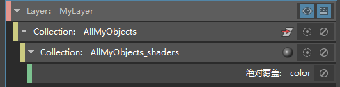
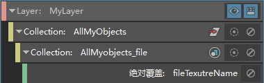

您可以通过两种方式覆盖对象的着色：
-
可以覆盖应用的整个材质。
例如，如果要为路面指定不同的材质，使其看起来潮湿、脏乱或坑洼，则可创建一个材质覆盖来覆盖着色组。请参见覆盖应用于集合中对象的材质。
-
可以覆盖着色器的属性，其中包括属性值或连接。
例如，如果当前已将 Blinn 着色器当前指定给对象，且您希望将 Blinn 着色器一直指定给这些对象，但您希望更改 Blinn 的颜色属性，则应选择此选项。有关示例工作流，请参见为集合创建颜色覆盖。还可以添加或更改任何属性连接。例如，可以将任何着色器属性映射到纹理。请参见使用值覆盖将网络连接到属性和使用连接覆盖来覆盖属性连接。
此功能适用于 Maya 着色器和第三方着色器。
标识指定给场景中每个对象的着色器
通过在大纲视图(Outliner)中启用“显示 > 指定的材质”(Display > Assigned Materials)选项，显示指定给场景中每个对象的着色器。
如果对象涉及逐面着色器指定，则会将指定给对象的所有着色器列入并分组到“材质”(Materials)标题下。请参见标识指定给场景中每个对象的着色器。
应用示例
示例 1：
如果对象具有类似的名称，则可按如下所示轻松覆盖指定给每个对象的材质：
假设场景中包含三个窗口，您可使用表达式将所有这三个窗口动态添加到同一集合。例如，如果所有窗口的名称中均包含字母 window，则可以使用表达式 *window* 将其包含在集合中。稍后，您可以在集合上创建一个材质覆盖，以便使用新材质覆盖原始材质。请参见覆盖应用于集合中对象的材质。
现在，如果向场景中添加新建筑，只要其窗口的名称中也包含字母 window，便可重新应用表达式，使新窗口包含在集合与应用的材质覆盖中。请参见更新场景时更新渲染设置。
示例 2：
如果场景中有 100 个对象，每个对象应用的着色器各不相同，并且您需要将每个着色器的亮度提高 10%，则可以执行以下操作：
- 创建包含这 100 个对象的集合。
- 选择集合，然后从“添加覆盖”(Add Override)下拉列表中选择“相对”(Relative)，并使用鼠标中键将“白炽度”(Incandescence)属性从任一着色器的“属性编辑器”(Attribute Editor)拖放到“特性编辑器”(Property Editor)。
系统将自动在对象集合之下创建着色器子集合，以及对应的“白炽度”(Incandescence)覆盖。
 -
选择该覆盖并在“特性编辑器”(Property Editor)中调整“白炽度”(Incandescence)属性。如此一来，集合中包含的所有着色器都会变得更亮。
这样就不需要分别调整每个着色器。
示例 3：
如果场景中有 100 个对象，每个对象应用的着色器相同，并且您需要更改其中两个对象上的着色，请执行以下操作：
- 在层上单击鼠标右键，然后选择“创建集合”(Create Collection)以创建包含这 100 个对象的集合，使其在层中可见。
- 在集合上单击鼠标右键，然后选择“创建集合”(Create Collection)以创建包含要更改着色的两个对象的子集合。
-
在此子集合上单击鼠标右键，然后选择“创建材质覆盖”(Create Material Override)。
选择该覆盖。在“特性编辑器”(Property Editor)中，单击
 按钮以指定不同材质；或者，将现有材质从“Hypershade”拖放到“特性编辑器”(Property Editor)。

按钮以指定不同材质；或者，将现有材质从“Hypershade”拖放到“特性编辑器”(Property Editor)。
视口将更新，以显示仅为属于第二个集合的这两个对象指定了新材质。
在本例中，由于所有对象共享同一着色器，因此无法如同示例 2 中一样覆盖该着色器上的属性。否则，所有对象都将应用相同的覆盖。您应创建一个材质覆盖而非着色器覆盖，因为着色器覆盖并不特定于集合，而是应用于同一层中共享相同的初始着色器指定的所有对象。
有关材质和着色器覆盖的详细信息，请参见覆盖应用于集合中对象的材质。
示例 4：
如果场景中有 100 个对象，每个对象应用的着色器各不相同，并且您需要更改其中两个对象上的着色，请执行以下操作：
- 在层上单击鼠标右键，然后选择“创建集合”(Create Collection)以创建包含这 100 个对象的集合，使其在层中可见。
- 在集合上单击鼠标右键，然后选择“创建集合”(Create Collection)以创建包含要更改着色的两个对象的子集合。
- 在此子集合上单击鼠标右键，然后选择“创建着色器覆盖”(Create Shader Override)或“创建材质覆盖”(Create Material Override)。
还可以如同示例 2 中一样覆盖着色器上的属性。例如，可以覆盖包括“颜色”(Color)和“白炽度”(Incandescence)在内的任何属性。与示例 3 相比，本示例比较简单，因为每个对象最初指定给了不同的着色器。
示例 5：
如果场景中有 100 个角色，且所有角色都穿着指定给不同着色器的 T 恤，但您要将所有这些 T 恤映射到新纹理，则可执行以下操作：
- 在层上单击鼠标右键，然后选择“创建集合”(Create Collection)以创建包含这 100 个角色的集合，使其在层中可见。
- 选择该集合，然后从“特性编辑器”(Property Editor)的“添加覆盖”(Add Override)下拉列表中选择“绝对”(Absolute)。
- 选择任何着色器以显示其“属性编辑器”(Attribute Editor)，然后使用鼠标中键将“颜色”(Color)属性拖放到“特性编辑器”(Property Editor)。
创建着色器子集合，以及对应的颜色覆盖。
-
选择该颜色覆盖，然后单击“特性编辑器”(Property Editor)中的
按钮以连接到新纹理。
有关详细信息，请参见使用值覆盖将网络连接到属性。
示例 6：
如果场景中有 100 个角色，且所有角色都穿着映射到一个纹理的 T 恤，但您要将所有这些 T 恤映射到新纹理，则可以执行以下操作：
- 在层上单击鼠标右键并选择“创建集合”(Create Collection)，以创建包含这 100 个角色的集合。
- 将层设置为可见并选择该集合，然后选择要从其映射到新纹理的文件节点。
- 在文件节点的“属性编辑器”(Attribute Editor)中，在“图像名称”(Image Name)属性的文件路径区域上单击鼠标右键，然后选择“为可见层创建绝对覆盖”(Create Absolute Override for Visible Layer)。
系统将创建文件节点子集合以及相应的文件纹理名称覆盖。
 - 选择该覆盖。在“特性编辑器”(Property Editor)中，单击文件夹图标以连接到新纹理。